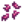
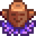
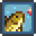
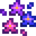
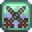

Skills
| Getting Started |
The Player |
Options | Controls | Mobile Controls |
Health | Energy | Skills | Day Cycle |
This page or section contains unmarked spoilers from update 1.6 of Stardew Valley. Players may want to avoid or be cautious toward reading this article/section. |
Skills are player attributes which are leveled up through the use of specific tools or actions, or by reading Books. Each skill has ten levels. A skill level increase is awarded immediately upon earning enough experience points (XP) for a new level, and is immediately displayed on the skills tab of the inventory. The first time the player levels up a skill on each day, they are notified with "You've got some new ideas to sleep on." The new skill level immediately increases the proficiency of the tool(s) associated with that skill.
Overnight, after the player goes to bed on the day a skill level increases, a popup announces the increase, and additionally awards knowledge of any applicable crafting or cooking recipes. At level 5 and level 10, players also select which one of two available Professions to specialize in. Each profession has its own set of benefits, such as sell price bonuses for related items. It should be noted that awards of recipe knowledge or profession benefits do not take place until seen in the popup overnight, and are not available until the first thing the following morning. In particular, items sold or shipped the day of the skill level increase do not receive the new price bonuses. Like recipes, profession benefits are only available beginning the following day.
All skills need the following experience points to increase skill level:
|
|
A variety of skills can be temporarily improved by eating specific foods. These skills will appear as a buff icon next to the player clock in the user interface. Skills can be viewed in the player skill tab in the game pause menu.
| Levels are gained by harvesting crops and caring for animals. Each level grants +1 hoe and watering can proficiency (see tools). | |
| Mining skill is increased by breaking rocks (normally done with a Pickaxe). Each level grants +1 pickaxe proficiency. | |
| Foraging skill includes both gathered foraged goods, and wood from trees chopped with an axe tool. Each level grants +1 axe proficiency. | |
| Fishing is associated with successfully completing the fishing mini-game or catching fish in a Crab Pot, increasing the fishing skill. Each level grants +1 fishing rod proficiency. | |
| Combat is a skill tied to the player's ability to fight against monsters. |
Proficiency
Proficiency refers to the amount of energy required to use a specific tool.
At skill level 0, each successful use of a Pickaxe, Axe, or Hoe costs 2 energy. Unsuccessful uses (e.g., attempting to chop a Large Log with the starter axe) cost 1 energy. Each cast of the Fishing Pole costs 8 energy, even if the cast fails (e.g., the fishing line does not land in water). The starter Watering Can uses 2 energy.
Each increase in skill decreases energy requirements by 0.1 points for specific tools (listed below). Skill increases past level 10 (only possible temporarily via Buffs) continue to decrease the energy requirements. So, for example, using a Pickaxe at Mining level 13 costs only 0.7 points per swing. (The game keeps track of fractional amounts of energy, but in the user interface they are rounded to the nearest integer.)
Powering up an upgraded Watering Can increases its energy cost by 2 points per power-up; each increase in skill decreases the energy requirement by 0.1 points (regardless of power level). At Farming Level 0, the starter can uses 2 energy to water one tile; the iridium can at maximum power uses 10 energy to water eighteen tiles. At Farming Level 10, the starter can uses 1 energy; the iridium at maximum power uses 9 energy (10 minus 0.1 per skill level). Using an upgraded can to water fewer tiles than it is able costs the same energy as the first watering can upgrade that is able to water that many tiles (single tile always the same as starter can, 5 tiles always the same as steel can). Attempting to use an empty watering can doesn't cost energy. Filling a watering can never uses energy.
Upgrading an Axe, Pickaxe, or Hoe does not alter the amount of energy required to use it. The increased power of the Axe and Pickaxe and increased area-of-effect of the Hoe will result in less overall energy used for the same task than a lower-level tool.
Note that all Hoes use the same energy (2 points at Farming Level 0, and 1 point at Farming Level 10), whether powered-up or used to till one tile of soil.
All fishing poles use the same energy: 8 points at Fishing Level 0, and 7 points at Fishing Level 10.
Affected ToolsFarming Foraging Fishing Mining |
Unaffected ToolsThe following tools do not consume energy:
The following tools always consume 4 points of energy: |
Neither loading a Crab Pot with Bait nor harvesting it uses any energy, at any skill level.
 Farming
Farming
- Main article: Farming
Farming skill is gained by harvesting crops. Caring for animals also adds experience: Petting, milking, and shearing farm animals or picking up an animal product inside a barn or coop each give 5 experience points. Using a hoe or watering can does not grant experience by itself. Each level grants +1 proficiency to hoes and watering cans.
| Level 1 | Level 2 | Level 3 | Level 4 | Level 5 | |
|---|---|---|---|---|---|
| Crafting Recipes: | Crafting Recipes: | Crafting / Cooking Recipes: | Crafting Recipes: | Choose a Profession: | |
Animal products worth 20% more. |
Crops worth 10% more. (Bonus applies to all Vegetables and Flowers, plus any Fruit that has not been foraged) | ||||
| Level 6 | Level 7 | Level 8 | Level 9 | Level 10 | |
| Crafting Recipes: | Crafting Recipes: | Crafting Recipes: | Crafting Recipes: | Rancher: | Tiller: |
Befriend coop animals quicker. Incubation time (for Incubator and Ostrich Incubator) cut in half. (Also improves coop product quality, see details here) |
Artisan goods (wine, cheese, oil, etc.) worth 40% more. (Note that oil does not actually benefit from the Artisan Profession) | ||||
Befriend barn animals quicker. Sheep produce wool faster. (Also improves barn product quality, see details here) |
All crops grow 10% faster. | ||||
 Mining
Mining
- Main article: Mining
Mining skill is increased by breaking rocks. Each level adds +1 to Pickaxe proficiency. Mining skill points are awarded when rocks are destroyed -- it doesn't matter if this is done by Pickaxe, Bombs, or by the action of Monsters.
Different rock types give different numbers of experience points.
| Level 1 | Level 2 | Level 3 | Level 4 | Level 5 | |
|---|---|---|---|---|---|
| Crafting Recipes: | Crafting Recipes: | Cooking Recipes: | Crafting Recipes: | Choose a Profession: | |
|
| ||||
| Level 6 | Level 7 | Level 8 | Level 9 | Level 10 | |
| Crafting Recipes: | Crafting Recipes: | Crafting Recipes: | Crafting Recipes: | Miner: | Geologist: |
|
| ||||
|
| ||||
 Foraging
Foraging
- Main article: Foraging
Foraging skill is increased both by gathering forage items found on the ground throughout Stardew Valley and by chopping down Trees with an Axe. Each foraging skill level adds +1 axe proficiency.
| Level 1 | Level 2 | Level 3 | Level 4 | Level 5 | |
|---|---|---|---|---|---|
| Crafting Recipes: | Cooking Recipes: | Crafting Recipes: | Crafting Recipes: | Choose a Profession: | |
|
|
| |||
| Level 6 | Level 7 | Level 8 | Level 9 | Level 10 | |
| Crafting Recipes: | Crafting Recipes: | Crafting Recipes: | Crafting Recipes: | Forester: | Gatherer: |
|
|
| |||
|
| ||||
Experience Points
Experience points (XP) are granted as follows:
- 12 XP for chopping down a tree with an axe (granted all at once for the last chop that causes the tree to fall).
- 1 XP for removing the tree stump after chopping down a tree.
- 1 XP for each piece of Moss harvested from trees.
- 1 XP per berry for shaking Blackberries and Salmonberries off bushes in their respective seasons.
- 25 XP for removing Large Stumps and Large Logs.
- 7 XP for each foraged item picked up from the ground.
- If the Gatherer profession doubles the foraged item, another 7 XP is granted for the extra item.
- 3 XP for each Spring Onion harvested from Cindersap Forest in Spring.
- 2 XP for items grown from Wild Seeds (also 3 Farming XP)
- If the Gatherer profession doubles the foraged item, another 7 XP is granted for the extra item.
- 5 XP for each mushroom collected from the Farm Cave if the mushroom option was selected, and from Mushroom Logs.
The 7 XP for foraging items applies solely to those items visible sitting on the ground that are picked up only if the player clicks on them; it does not apply to items lying on the ground (e.g., dropped by shaking) that are automatically added to the player inventory by magnetism. Specific items that do grant 7 XP include:
- Standard randomly-spawned foraged items throughout Stardew Valley and Calico Desert.
- All items foraged from the Beach and the west side of Ginger Island.
- All fruit collected from the Farm Cave, if the fruit bat option was selected.
- All mushrooms collected from the Ginger Island Mushroom Cave.
- Truffles.
- Forage items spawned on the ground in the Mines and Skull Cavern, namely Red Mushrooms, Purple Mushrooms, and Fiddlehead Ferns.
The following Items do NOT grant any foraging experience:
- Trees felled by Bombs (however, weakening a tree with bombs before felling it with an axe will still give full XP).
- Twig debris.
- Grapes grown from Grape Starters (grants Farming XP instead).
- Items dug up from artifact spots, such as Snow Yams and Winter Roots.
- Items grown in Garden Pots.
- Items dug up by tilling soil in the Mines or Skull Cavern (e.g., Cave Carrot)
- Mushrooms obtained from chopping or tapping a Mushroom Tree.
- Non-forage items spawned on the ground in the Mines and Skull Cavern, namely Quartz, Earth Crystals, Frozen Tears, Fire Quartz, and Dinosaur Eggs -- except that a bug causes any duplicates created by the Gatherer profession to give 7 XP.
- Forageables obtained from killing Monsters.
- Gingers dug up from the ground.
 Fishing
Fishing
- Main article: Fishing
Fishing Skill is increased by catching Fish, Trash, Seaweed, Green Algae, or White Algae with a Fishing Rod/Pole or by harvesting Crab Pots.
Each level grants +1 Fishing Rod Proficiency, increases the minimum fish size (in/cm) and bobber bar height, and decreases the max amount of time before fish bite. Fishing skill also increases the chance to find quality (silver or gold star) fish.
| Level 1 | Level 2 | Level 3 | Level 4 | Level 5 | |
|---|---|---|---|---|---|
| Crafting Recipes: | Crafting Recipes: | Crafting / Cooking Recipes: | Crafting Recipes: | Choose a Profession: | |
| Casting distance increased by one tile |  Bait
|
|
|
|
|
| Level 6 | Level 7 | Level 8 | Level 9 | Level 10 | |
| Crafting Recipes: | Crafting Recipes: | Crafting Recipes: | Crafting / Cooking Recipes: | Fisher: | Trapper: |
|
|
|
|
|
|
|
|||||
 Combat
Combat
- Main article: Combat
Combat skill is increased by fighting monsters. Some levels add to the player's total HP (health points), as shown by an increase in the health meter.
| Level 1 | Level 2 | Level 3 | Level 4 | Level 5 | |
|---|---|---|---|---|---|
| Crafting Recipes: | Crafting Recipes: | Cooking Recipes: | Crafting Recipes: | Choose a Profession: | |
|
(Note that the increase is multiplicative. The formula is: critChance = critChance * 1.5) | ||||
| Level 6 | Level 7 | Level 8 | Level 9 | Level 10 | |
| Crafting Recipes: | Crafting Recipes: | Crafting Recipes: | Crafting / Cooking Recipes: | Fighter: | Scout: |
(Stacks multiplicatively with Fighter) |
| ||||
|
(2x Critical strike damage) | ||||
Changing Professions

The Statue Of Uncertainty in The Sewers allows the player to change professions. After donating  10,000g, the statue requires the player to choose one skill to change. That night after the player goes to bed, the Level 5 "Choose a profession" screen will appear, followed by the corresponding Level 10 "Choose a profession" screen for the skill selected at the statue.
10,000g, the statue requires the player to choose one skill to change. That night after the player goes to bed, the Level 5 "Choose a profession" screen will appear, followed by the corresponding Level 10 "Choose a profession" screen for the skill selected at the statue.
Only skills for which professions have already been chosen will appear on the Statue's menu. As soon as the player chooses a profession to change, the bonuses for existing professions disappear. Skills that give bonuses to sell prices will not apply to items placed in the shipping bin the day the profession is changed.
Just like levelling up a skill at the end of the day causes the player to wake up with full energy the next day no matter what, using this statue on any given day will cause the player to wake up with full energy the next day as well.
Skill-Based Title
Based on the total Skill level a certain Title is given under the player's name in the Skills tab of the Player Menu. Their level and title are also visible when hovering over their picture on the Inventory Tab of the Player Menu.
The level is calculated as follows: (farmingLevel + fishingLevel + foragingLevel + combatLevel + miningLevel + luckLevel) / 2
If the resulting number ends in 0.5, the decimal value is truncated, and only the integer portion is considered.
Here are the possible Titles:
- level 29: Farm King
- level > 27: Cropmaster
- level > 25: Agriculturist
- level > 23: Farmer
- level > 21: Rancher
- level > 19: Planter
- level > 17: Granger
- level > 15: Farmgirl/Farmboy
- level > 13: Sodbuster
- level > 11: Smallholder
- level > 9: Tiller
- level > 7: Farmhand
- level > 5: Cowpoke
- level > 3: Bumpkin
- level > 1: Greenhorn
- level < 2: Newcomer
Luck level 10, in addition to level 10 in all Skills, would be needed to get the highest title, Farm King. However, luck level (a value separate from daily Luck) is not implemented in the game. In the game code, Luck appears to have been intended as a 6th skill that could be leveled up, like the other skills. This means the highest level possible is 25, making "Farmer" the best obtainable title.
Mastery
- Main article: Mastery Cave
Once the player has reached max level in all skills, they can open a door in Cindersap Forest to enter the Mastery Cave. Here, players can use extra experience to level up their mastery level. Farming experience points only contribute to mastery points at a 50% rate, while experience points for the rest of the skills contribute to mastery points at a 100% rate.
| Level | Mastery Points Required for This Level | Total Mastery Points Required Through This Level |
|---|---|---|
| 1 | 10,000 | 10,000 |
| 2 | 15,000 | 25,000 |
| 3 | 20,000 | 45,000 |
| 4 | 25,000 | 70,000 |
| 5 | 30,000 | 100,000 |
The mastery levels can be used to master the five skills, unlocking different perks. Masteries achieved are shown on the Special Items & Powers tab of the player's inventory.
| Name | Rewards | ||
|---|---|---|---|
Farming Mastery |
Iridium Scythe | Can be used to harvest any crops. It's also excellent at gathering hay. | |
| Statue Of Blessings Recipe | Touching the statue gives a unique blessing every day. | ||
| You can now find Golden Animal Crackers, which permanently doubles a farm animal's produce. Doesn't work on pigs. | |||
Mining Mastery |
Statue Of The Dwarf King Recipe | Choose from two mining-related powers each day. | |
| Heavy Furnace Recipe | It's more efficient than a regular furnace. Requires 25 pieces of ore and 3 coal per use. | ||
| Gem-bearing rocks now grant twice the gems. | |||
Foraging Mastery |
Mystic Tree Seed recipe | This can be planted to grow a special tree. | |
 |
Treasure Totem recipe | Use on diggable terrain to summon a ring of treasure spots. | |
| You can now find Golden Mystery Boxes, which contain superior items. | |||
|  Fishing Mastery |
Advanced Iridium Rod | Use in the water to catch fish. Up to two bobbers can be attached at once. | |
 |
Challenge Bait recipe | A "perfect" catch yields triple the fish. However, each time a fish escapes the "fishing bar", the catch is reduced. | |
| You can now encounter Golden Fishing Treasure Chests. | |||
|  Combat Mastery |
Anvil recipe | Allows you to re-forge trinkets, randomizing their stats. Costs 3 iridium bars per use. | |
| Mini-Forge recipe | Now, you can use a dwarvish forge from the convenience of your home. | ||
| Unlocks a new equipment slot for trinkets. Trinkets can be found while adventuring and grant special powers. | |||
History
- 1.3.27: Added Statue of Uncertainty. Removing a regular tree stump now gives +1 Foraging experience.
- 1.4: Fixed Prospector profession not applied to rocks destroyed in the mines.
- 1.4.1: Profession bonuses now disappear as soon as a profession is chosen to be changed at the Statue of Uncertainty. Only skills that have already chosen professions are shown in the Statue's menu.
- 1.6: Added mastery. Added daytime hint message at leveling up. Experience can now be gained by reading Books.
- 1.6.4: Farming experience now contributes to mastery experience at a 50% rate.
| Skills & Stats | |
|---|---|
| Skills | Farming Mining Foraging Fishing Combat |
| Stats | Attack Crit. Chance Crit. Power Defense Immunity Luck Magnetism Speed Weight |